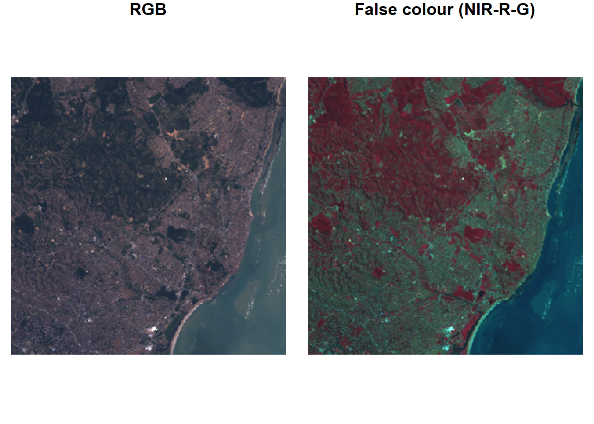

The distinct method selects distinct records, where st_equals is used to evaluate distinctness of geometries.
Spatial Joins
The concepts of “left”, “right”, “inner”, or “full” joins remain
When using spatial joins, each record may have several matched records … A way to reduce this complexity may be to select from the matching records the one with the largest overlap with the target geometry.
Loading shapefile and grid
system.file("shape/nc.shp", package="sf") |>read_sf() |>st_transform('EPSG:2264') -> ncgr <-st_sf(label =apply(expand.grid(1:10, LETTERS[10:1])[,2:1], 1, paste0, collapse =""),geom =st_make_grid(nc))gr$col <-sf.colors(10, categorical =TRUE, alpha = .3)# cut, to verify that NA's work out:gr <- gr[-(1:30),]
nc_j <-st_join(nc, gr, largest =TRUE)
spatial join
image code
par(mfrow =c(2,1), mar =rep(0,4))plot(st_geometry(nc_j), border ='grey')plot(st_geometry(gr), add =TRUE, col = gr$col)text(st_coordinates(st_centroid(st_geometry(gr))), labels = gr$label, cex = .85)# the joined dataset:plot(st_geometry(nc_j), border ='grey', col = nc_j$col)text(st_coordinates(st_centroid(st_geometry(nc_j))), labels = nc_j$label, cex = .7)plot(st_geometry(gr), border ='#88ff88aa', add =TRUE)
Sparse geometry binary predicate list of length 1, where the predicate
was `intersects'
1: 1
If one wants sf to use ellipsoidal coordinates as if they are Cartesian coordinates, the use of s2 can be switched off
old <-sf_use_s2(FALSE)# Spherical geometry (s2) switched offst_intersects(pol, pt)# although coordinates are longitude/latitude, st_intersects assumes# that they are planar# Sparse geometry binary predicate list of length 1, where the# predicate was `intersects'# 1: (empty)sf_use_s2(old) # restore# Spherical geometry (s2) switched on
stars
For the classic GIS view of raster layers, terra package
Capabilities of stars include
allows for representing dynamic (time varying) raster stacks
aims at being scalable, also beyond local disk size
provides a strong integration of raster functions in the GDAL library
handles, in addition to regular grids, rotated, sheared, rectilinear, and curvilinear rasters
provides a tight integration with package sf
handles array data with non-raster spatial dimensions, the vector data cubes
follows the tidyverse design principles
Example: Olinda, Brazil
r <-read_stars(system.file("tif/L7_ETMs.tif", package ="stars"))r
stars object with 3 dimensions and 1 attribute
attribute(s):
Min. 1st Qu. Median Mean 3rd Qu. Max.
L7_ETMs.tif 1 54 69 68.91242 86 255
dimension(s):
from to offset delta refsys point x/y
x 1 349 288776 28.5 SIRGAS 2000 / UTM zone 25S FALSE [x]
y 1 352 9120761 -28.5 SIRGAS 2000 / UTM zone 25S FALSE [y]
band 1 6 NA NA NA NA
attributes
from: starting index
to: ending index
offset: dimension value at the start (edge) of the first pixel
delta: cell size; negative delta values indicate that pixel index increases with decreasing dimension values
refsys: reference system
point: logical, indicates whether cell values have point support or cell support
x/y: indicates whether a dimension is associated with a spatial raster x- or y-axis
Plots
plot(r)
par(mfrow =c(1, 2))plot(r, rgb =c(3,2,1), reset =FALSE, main ="RGB") # rgbplot(r, rgb =c(4,3,2), main ="False colour (NIR-R-G)") # false colour

Subsetting
Example: selects from r
attributes 1-2, index 101-200 for dimension 1, and index 5-10 for dimension 3
omitting dimension 2 means that no subsetting takes place
r[1:2, 101:200,, 5:10]
Selecting discontinuous ranges is supported only when it is a regular sequence
For selecting particular ranges of dimension values, one can use dplyr::filter
filter(r, x >289000, x <290000)
stars object with 3 dimensions and 1 attribute
attribute(s):
Min. 1st Qu. Median Mean 3rd Qu. Max.
L7_ETMs.tif 5 51 63 64.3337 75 242
dimension(s):
from to offset delta refsys point x/y
x 1 35 289004 28.5 SIRGAS 2000 / UTM zone 25S FALSE [x]
y 1 352 9120761 -28.5 SIRGAS 2000 / UTM zone 25S FALSE [y]
band 1 6 1 1 NA NA
or slice
slice(r, band, 3)
stars object with 2 dimensions and 1 attribute
attribute(s):
Min. 1st Qu. Median Mean 3rd Qu. Max.
L7_ETMs.tif 21 49 63 64.35886 77 255
dimension(s):
from to offset delta refsys point x/y
x 1 349 288776 28.5 SIRGAS 2000 / UTM zone 25S FALSE [x]
y 1 352 9120761 -28.5 SIRGAS 2000 / UTM zone 25S FALSE [y]
Cropping
b <-st_bbox(r) |>st_as_sfc() |>st_centroid() |>st_buffer(units::set_units(500, m))r[b]
stars object with 3 dimensions and 1 attribute
attribute(s):
Min. 1st Qu. Median Mean 3rd Qu. Max. NA's
L7_ETMs.tif 22 54 66 67.68302 78.25 174 2184
dimension(s):
from to offset delta refsys point x/y
x 157 193 288776 28.5 SIRGAS 2000 / UTM zone 25S FALSE [x]
y 159 194 9120761 -28.5 SIRGAS 2000 / UTM zone 25S FALSE [y]
band 1 6 NA NA NA NA
Circular centre region of the Landsat 7 scene (band 1)
By default, the resulting raster is cropped to the extent of the selection object; otherwise
r[b, crop =FALSE]
stars object with 3 dimensions and 1 attribute
attribute(s):
Min. 1st Qu. Median Mean 3rd Qu. Max. NA's
L7_ETMs.tif 22 54 66 67.68302 78.25 174 731280
dimension(s):
from to offset delta refsys point x/y
x 1 349 288776 28.5 SIRGAS 2000 / UTM zone 25S FALSE [x]
y 1 352 9120761 -28.5 SIRGAS 2000 / UTM zone 25S FALSE [y]
band 1 6 NA NA NA NA
# we can reset dimension offsetsr[b] |>st_normalize() |>st_dimensions()
from to offset delta refsys point x/y
x 1 37 293222 28.5 SIRGAS 2000 / UTM zone 25S FALSE [x]
y 1 36 9116258 -28.5 SIRGAS 2000 / UTM zone 25S FALSE [y]
band 1 6 NA NA NA NA
or simply using the stars function made for cropping
st_crop(r, b)
Redimensioning
aperm: transposes an array by permuting the order of dimensions
Attributes and dimensions can be swapped, using split and merge
(rs <-split(r))
stars object with 2 dimensions and 6 attributes
attribute(s):
Min. 1st Qu. Median Mean 3rd Qu. Max.
X1 47 67 78 79.14772 89 255
X2 32 55 66 67.57465 79 255
X3 21 49 63 64.35886 77 255
X4 9 52 63 59.23541 75 255
X5 1 63 89 83.18266 112 255
X6 1 32 60 59.97521 88 255
dimension(s):
from to offset delta refsys point x/y
x 1 349 288776 28.5 SIRGAS 2000 / UTM zone 25S FALSE [x]
y 1 352 9120761 -28.5 SIRGAS 2000 / UTM zone 25S FALSE [y]
merge(rs, name ="band") |>setNames("L7_ETMs")
stars object with 3 dimensions and 1 attribute
attribute(s):
Min. 1st Qu. Median Mean 3rd Qu. Max.
L7_ETMs 1 54 69 68.91242 86 255
dimension(s):
from to offset delta refsys point values x/y
x 1 349 288776 28.5 SIRGAS 2000 / UTM zone 25S FALSE NULL [x]
y 1 352 9120761 -28.5 SIRGAS 2000 / UTM zone 25S FALSE NULL [y]
band 1 6 NA NA NA NA X1,...,X6
Multiple stars object with identical dimensions can be combined using c
Extraction
A very common use case for raster data cube analysis is the extraction of values at certain locations, or computing aggregations over certain geometries
stars object with 2 dimensions and 1 attribute
attribute(s):
Min. 1st Qu. Median Mean 3rd Qu. Max.
L7_ETMs.tif 12 41.75 63 60.95833 80.5 145
dimension(s):
from to refsys point
geometry 1 20 SIRGAS 2000 / UTM zone 25S TRUE
band 1 6 NA NA
values
geometry POINT (293002.2 9115516),...,POINT (290941.1 9114128)
band NULL
Predictive Models
Randomly chosen sample locations for training data; red: water, yellow: land
Dimension-wise, we can apply functions to selected array dimensions
st_apply(r, c("x", "y"), mean)
stars object with 2 dimensions and 1 attribute
attribute(s):
Min. 1st Qu. Median Mean 3rd Qu. Max.
mean 25.5 53.33333 68.33333 68.91242 82 255
dimension(s):
from to offset delta refsys point x/y
x 1 349 288776 28.5 SIRGAS 2000 / UTM zone 25S FALSE [x]
y 1 352 9120761 -28.5 SIRGAS 2000 / UTM zone 25S FALSE [y]
stars object with 2 dimensions and 1 attribute
attribute(s):
Min. 1st Qu. Median Mean 3rd Qu. Max.
ndvi -0.7534247 -0.2030075 -0.06870229 -0.06432464 0.1866667 0.5866667
dimension(s):
from to offset delta refsys point x/y
x 1 349 288776 28.5 SIRGAS 2000 / UTM zone 25S FALSE [x]
y 1 352 9120761 -28.5 SIRGAS 2000 / UTM zone 25S FALSE [y]
Aggregation over a temporal dimension is done by passing a time variable as the second argument to aggregate, as a
set of time stamps indicating the start of time intervals,
set of time intervals defined by make_intervals, or
time period like "weeks", "5 days", or "years".
Example: Air Quality
We use a small excerpt from the European air quality data base to illustrate aggregation operations on vector data cubes. The same data source was used by Gräler, Pebesma, and Heuvelink (2016)
stars object with 2 dimensions and 1 attribute
attribute(s):
Min. 1st Qu. Median Mean 3rd Qu. Max. NA's
PM10 0 9.921 14.792 17.69728 21.992 274.333 157659
dimension(s):
from to offset delta refsys point
station 1 70 NA NA WGS 84 TRUE
time 1 4383 1998-01-01 1 days Date FALSE
values
station POINT (9.585911 53.67057),...,POINT (9.446661 49.24068)
time NULL
sparse space-time diagram of PM10 measurements by time and station
image code
par(mar =c(5.1, 4.1, 0.3, 0.1))image(aperm(log(aq), 2:1), main =NULL)
Example: aggregate these station time series to area means
(a <-aggregate(aq, de_nuts1, mean, na.rm =TRUE))
stars object with 2 dimensions and 1 attribute
attribute(s):
Min. 1st Qu. Median Mean 3rd Qu. Max. NA's
PM10 1.0752 10.8855 15.31625 17.88823 21.81086 172.2665 25679
dimension(s):
from to offset delta refsys point
geom 1 16 NA NA WGS 84 FALSE
time 1 4383 1998-01-01 1 days Date FALSE
values
geom MULTIPOLYGON (((9.65046 4...,...,MULTIPOLYGON (((10.77189 ...
time NULL
Example: show the maps for six arbitrarily chosen days
a |>filter(time >="2008-01-01", time <"2008-01-07") |>plot(key.pos =4)
Example: time series plot of mean values for a single state
plot(as.xts(a)[,4], main = de_nuts1$NAME_1[4])
Example: Transportation
Origin destination data zones for Bristol, UK, with zone 33 (E02003043) coloured red
image code
plot(st_geometry(bristol_zones), axes =TRUE, graticule =TRUE)plot(st_geometry(bristol_zones)[33], col ='red', add =TRUE)
d <-st_dimensions(o = zones, d = zones, mode = mode)odm <-st_as_stars(list(N = a), dimensions = d)
# plot, sliced for destination zone 33plot(adrop(odm[,,33]) +1, logz =TRUE)
Example: largest number of travellers as its destination
d <-st_apply(odm, 2, sum)which.max(d[[1]])
[1] 33
Example: Total transportation by OD
st_apply(odm, 1:2, sum)
stars object with 2 dimensions and 1 attribute
attribute(s):
Min. 1st Qu. Median Mean 3rd Qu. Max.
sum 0 0 0 19.20636 19 1434
dimension(s):
from to refsys point
o 1 102 WGS 84 FALSE
d 1 102 WGS 84 FALSE
values
o MULTIPOLYGON (((-2.510462...,...,MULTIPOLYGON (((-2.55007 ...
d MULTIPOLYGON (((-2.510462...,...,MULTIPOLYGON (((-2.55007 ...
Example: Origin totals, by mode
st_apply(odm, c(1,3), sum)
stars object with 2 dimensions and 1 attribute
attribute(s):
Min. 1st Qu. Median Mean 3rd Qu. Max.
sum 1 57.5 214.5 489.7623 771 2903
dimension(s):
from to refsys point
o 1 102 WGS 84 FALSE
mode 1 4 NA FALSE
values
o MULTIPOLYGON (((-2.510462...,...,MULTIPOLYGON (((-2.55007 ...
mode bicycle,...,train
Example: Destination totals, by mode
st_apply(odm, c(2,3), sum)
stars object with 2 dimensions and 1 attribute
attribute(s):
Min. 1st Qu. Median Mean 3rd Qu. Max.
sum 0 13 103.5 489.7623 408.25 12948
dimension(s):
from to refsys point
d 1 102 WGS 84 FALSE
mode 1 4 NA FALSE
values
d MULTIPOLYGON (((-2.510462...,...,MULTIPOLYGON (((-2.55007 ...
mode bicycle,...,train
Plotting the origins and destinations:
o <-st_apply(odm, 1, sum)d <-st_apply(odm, 2, sum)x <- (c(o, d, along =list(od =c("origin", "destination"))))plot(x, logz =TRUE)
Normalization
a <-set_units(st_area(st_as_sf(o)), km^2)o$sum_km <- o$sum / ad$sum_km <- d$sum / aod <-c(o["sum_km"], d["sum_km"], along =list(od =c("origin", "destination")))plot(od, logz =TRUE)
# Total commutes per square km, by area of origin (left) or destination (right)